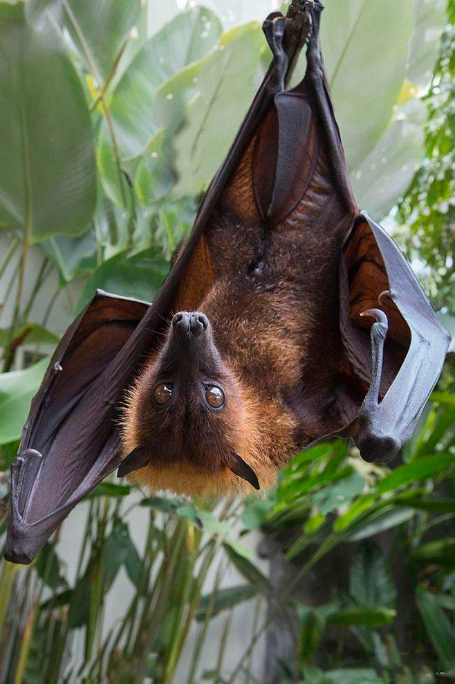

|  |
台灣狐蝠（學名：Pteropus dasymallus formosus），是台灣體型最大的一種蝙蝠，原先發現主要分布於台灣台東縣綠島，於高雄、花蓮、臺東、宜蘭以及蘭嶼都是零星發現。 狐蝠展翼可達1公尺，身長約20公分，體重350至550公克。其並不使用超音波定位，而是依照視覺與嗅覺尋找食物，以植物的果實、花朵、嫩葉為主食。住在樹上，而非陰暗的洞穴。 |
歷經人類登島之後數十年的捕捉利用，以及對當地森林地的開發破壞，綠島土地利用的變遷造成牠們的棲地喪失，導致狐蝠族群數量已大幅銳減，目前粗估全台不超過50隻。